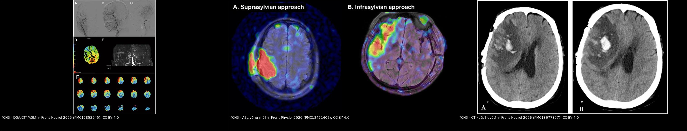
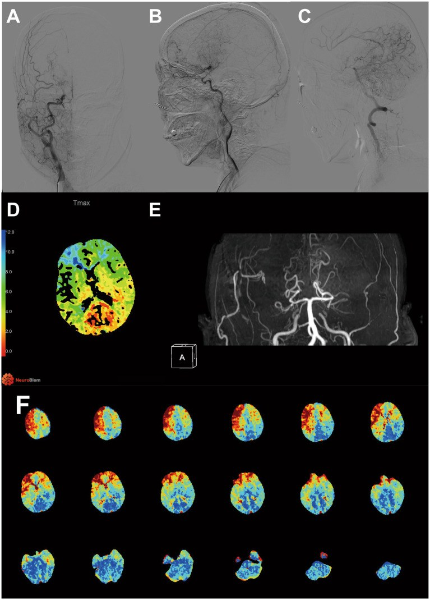
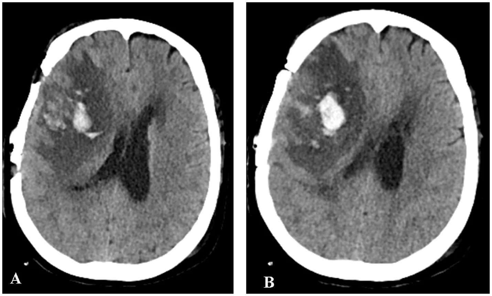
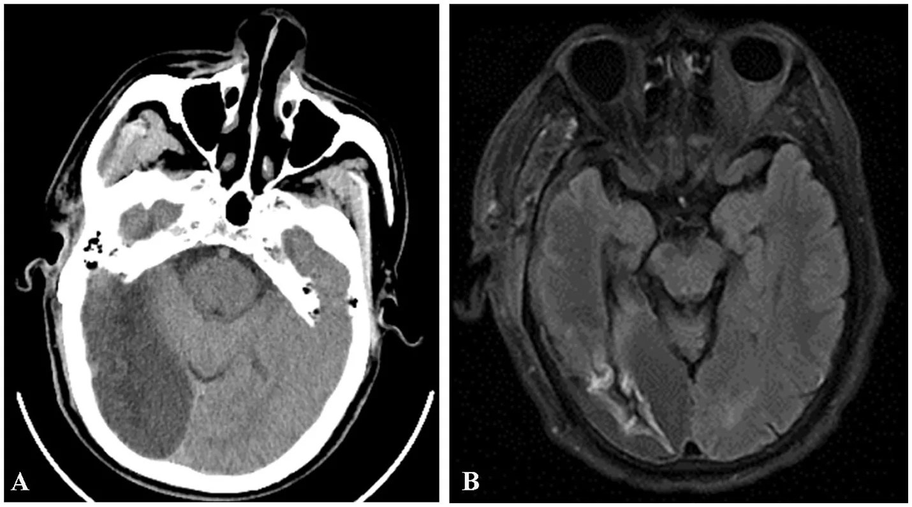

1784 — Hội chứng tưới máu quá mức (CHS) sau tái thông moyamoya: ASL/CTP trước–sau, ngưỡng ΔCBF > 43,48 và phân biệt chảy máu – nhồi máu – cơn động kinh
Tags: pattern:tuoi-mau-bang-he pattern:xuat-huyet-nao pattern:phu-nao vung:nao-nhi vung:vo-nao score:Suzuki protocol:ASL protocol:CTP protocol:DSA protocol:NCCT protocol:SWI
Mức chắc chắn (certainty): tổng hợp y văn (literature synthesis) — gộp meta-analysis 23 nghiên cứu/2.083 ca (2025, PMID 41392131), ba đoàn hệ tái thông moyamoya có số liệu định lượng (PMC12852945, PMC13461402, PMC13527932), một đoàn hệ 146 ca đối chiếu ASL với biến chứng chảy máu/nhồi máu (PMC13677357), và ca minh họa nguyên văn trong các bài này. Số nào nguồn không đưa thì ghi "chưa rõ", không suy diễn.
Câu chốt: CHS không phải "máu đến nhiều quá" một cách đơn giản, mà là thất bại tự điều hòa (autoregulation failure) của một vùng não đã giãn mạch tối đa vì thiếu máu mạn: khi miệng nối mở ra, áp lực hệ thống truyền thẳng vào giường mao mạch không còn khả năng co lại → phù mạch và/hoặc xuất huyết. Vì vậy chẩn đoán cần triệu chứng mới + bằng chứng tăng tưới máu khu trú, và điều trị là hạ áp có kiểm soát, không phải ngừng tưới máu. Nối 1780 – Chọn kỹ thuật tái thông moyamoya (kỹ thuật mổ), 1782 – Phình mạch trong moyamoya (chảy máu muộn do phình) và 207 – Phình mạch nội sọ chưa vỡ (xuất huyết não).
1. Tổng quan bệnh học – cơ chế hình ảnh
1.1 Định nghĩa và vì sao CHS xảy ra (TẠI SAO)
- Định nghĩa thực hành: xuất hiện triệu chứng thần kinh mới (đau đầu khu trú, cơn động kinh, thất ngôn, yếu/giảm cảm giác) sau tái thông, kèm tăng tưới máu khu trú trong lãnh thổ mạch ghép trên ASL hoặc CTP, không có nhồi máu mới hoặc xuất huyết nội sọ giải thích triệu chứng (PMC13527932, PMC13461402). Tiêu chuẩn hình ảnh chặt của một đoàn hệ là CBF vùng mổ tăng > 100% so với trước mổ trên ASL (PMC13461402).
- Sinh lý bệnh — ba bước:
- Giãn mạch tối đa do thiếu máu mạn: vùng não hạ tưới (thường giai đoạn Suzuki cao) đã dùng hết dự trữ giãn mạch; tiểu động mạch trở nên thụ động theo áp lực (pressure-passive).
- Tái tưới máu đột ngột: cầu nối STA–MCA là mạch có sức cản thấp, đưa áp lực hệ thống vào giường mao mạch đang giãn tối đa → ứng suất thành mạch (wall shear stress) tăng vọt.
- Tổn thương hàng rào máu–não: ứng suất + gốc oxy hóa + NO làm phá vỡ BBB → phù mạch (vasogenic edema), sau đó có thể xuất huyết ở mạch bàng hệ/thành mạch mỏng. Đây là lý do CHS có phổ liên tục: chỉ tăng tưới máu → phù → xuất huyết nhu mô/não thất.
- Vì sao không phải "tăng tưới máu lành tính": tăng tưới máu đơn thuần sau mổ có thể không triệu chứng; chỉ khi vượt ngưỡng tự điều hòa mới thành CHS. Trong meta-analysis, xuất huyết sau CHS chiếm 15% (95% CI 7–24%), cơn động kinh 8% (5–11%) (PMID 41392131) — đây là các biến cố làm thay đổi xử trí ngay.
- Vì sao ASL/CTP thấy được: ASL đánh dấu nước trong máu động mạch → tín hiệu cao ở vùng CBF tăng; CTP đo thời gian vận chuyển (Tmax) — vùng tăng tưới máu có Tmax ngắn lại. Trên CT, xuất huyết là tăng đậm độ cấp (50–80 HU); trên DWI, nhồi máu là hạn chế khuếch tán (ADC thấp) — đây là ba đường dẫn hình ảnh tách biệt.
1.2 Ngưỡng định lượng nằm lòng (bắt buộc nhớ)
| Chỉ số | Con số | Nguồn |
|---|---|---|
| Tần suất CHS gộp | 23% (95% CI 17–30%), 23 nghiên cứu/2.083 ca | PMID 41392131 |
| Theo kỹ thuật | trực tiếp 27%; phối hợp 21% | cùng nguồn |
| Biến chứng của CHS | động kinh 8% (5–11%); xuất huyết 15% (7–24%) | cùng nguồn |
| Đoàn hệ đơn trung tâm | 11,2% (13/116); 11,65% (12/103); 12,74% | PMC13461402; PMC12852945; PMC13527932 |
| Thời điểm khởi phát | 15 phút – 6 ngày sau mổ; phần lớn trong 2 ngày đầu | PMC12852945 |
| Thời gian hồi phục | thường tự khỏi trong 2 tuần nếu không xuất huyết | PMC12852945 |
| Tiêu chuẩn hình ảnh | CBF vùng mổ tăng > 100% so với trước mổ trên ASL | PMC13461402 |
| Ngưỡng ASL dự báo xuất huyết | ΔCBF > 43,48 mL/100 g/phút: AUC 0,989, Se 100%, Sp 95,65%, PPV 57,1%, NPV 100% | PMC13677357 |
| Ngưỡng ASL dự báo nhồi máu | ΔCBF ≤ 4,48 mL/100 g/phút: AUC 0,915, Se 92,86%, Sp 78,79%, PPV 31,7%, NPV 99,0% | cùng nguồn |
| Lưu lượng STA lúc cắt (STA-Cut) | ≤ 40,5 mL/phút: AUC 0,843, Se 66,3%, Sp 100%; nhóm CHS 26,15 ± 9,54 vs không CHS 63,88 ± 38,01 mL/phút (p = 0,0006) | PMC13527932 |
| CTP trước mổ | Suzuki cao OR 8,87 (1,44–54,45); PCA Tmax thấp OR 0,03 (0,00–0,69); mô hình AUC 0,83, cut-off 0,060 | PMC12852945 |
| tASL sau mổ | thể tích tưới máu > 104,45 cm³: AUC 0,663, Se 69,2%, Sp 67,0% | PMC13461402 |
| Tuổi / giai đoạn / THA | tuổi ≥ 61: Se 69,2%, Sp 95,1%; Suzuki IV OR 8,213 (1,460–46,193); tăng huyết áp OR 17,565 (4,371–70,584) | cùng nguồn |
Đọc số cho đúng: các ngưỡng ASL/CTP được dẫn xuất và kiểm định trong cùng một đoàn hệ (PMC13461402, PMC13677357) — tác giả tự gọi là tín hiệu khám phá (exploratory), chưa phải quy tắc quyết định độc lập. Dùng để tầng nguy cơ và chọn thời điểm chụp, không dùng để thay thế đánh giá lâm sàng.
1.3 Vì sao cùng một bệnh cảnh lại có ba kiểu hình ảnh
| Kiểu | Cơ chế | Hình ảnh chốt |
|---|---|---|
| CHS đơn thuần | tăng tưới máu + phù nhẹ, chưa vỡ mạch | ASL/CTP tăng khu trú; NCCT bình thường hoặc phù nhẹ; DWI không hạn chế |
| CHS thể xuất huyết | BBB vỡ + mạch bàng hệ thành mỏng | NCCT: tăng đậm độ trong nhu mô/não thất; SWI: blooming; có thể kèm phù |
| CHS "giả" do nhồi máu | tưới máu không đủ hoặc tụt áp | DWI hạn chế khuếch tán, ADC thấp; ASL giảm hoặc không tăng; đừng hạ áp |
2. Mẫu hình + chẩn đoán phân biệt theo thời điểm và vị trí (Gamut)
- Theo thời điểm: < 24 giờ (thường gặp nhất; đau đầu, cơn động kinh, thất ngôn) → 1–3 ngày (đỉnh phù/xuất huyết) → 3–7 ngày (giảm dần, nhưng vẫn có ca khởi phát ngày 6). Sau 1 tuần mà triệu chứng mới thì phải tìm nguyên nhân khác (nhiễm trùng, tụ máu, động kinh muộn).
- Theo vị trí: vùng miệng nối STA–MCA (vỏ não trán–thái dương) là nơi hay gặp nhất; thể xa miệng nối/watershed do tái phân bố dòng; thể bán cầu đối bên hiếm; có thể gặp khi tăng tưới máu toàn thể hoặc sau đợt hạ áp.
- Theo hình thái: ổ đơn (quanh miệng nối) vs lan tỏa một bán cầu (thể nặng, dễ xuất huyết) vs đa ổ (gợi ý hạ áp/tắc mạch, không phải CHS).
- Mnemonic lâm sàng "3 Đ": Đau đầu mới (khu trú, khác trước mổ), Động kinh, Đột ngột thay đổi ngôn ngữ/vận động — kèm huyết áp thường cao.
- Gamut theo bối cảnh:
- Sau tái thông trực tiếp → CHS (27%) > nhồi máu quanh miệng nối > tụ máu ngoài trục.
- Sau tái thông gián tiếp → CHS ít hơn nhưng vẫn có; nguyên nhân khác: thiếu máu vùng mổ, nhiễm trùng vết mổ.
- Trẻ em → CHS có thể biểu hiện kích thích, bỏ ăn, nôn, co giật thay vì đau đầu/ngôn ngữ; đừng chờ "tam chứng người lớn".
3. Bảng so sánh phân biệt (ma trận đối chiếu)
| Thực thể (entity) | Hình ảnh điển hình | Chốt vào (rule-in) | Chốt loại (rule-out) | Gợi ý xác nhận |
|---|---|---|---|---|
| CHS đơn thuần | Vùng vỏ não quanh miệng nối tăng tín hiệu ASL/CTP; NCCT bình thường; DWI âm | Triệu chứng mới khớp vị trí + CBF tăng > 100% (hoặc ΔCBF > 43,48) | DWI hạn chế khuếch tán → không phải CHS đơn thuần | ASL/CTP lặp sau 24–48 giờ; theo dõi HA |
| CHS thể xuất huyết | NCCT tăng đậm độ trong nhu mô/não thất; SWI blooming; phù quanh ổ | Máu trong nhu mô + tăng tưới máu cùng vùng | Máu ở xa vùng tăng tưới máu → nghĩ phình vỡ lại/tăng áp | NCCT + CTA/MRA + SWI |
| Nhồi máu quanh mổ | Ổ giảm đậm độ theo lãnh thổ; DWI sáng/ADC tối; ASL giảm | Hạn chế khuếch tán + CBF giảm | CBF tăng mạnh + DWI âm → loại nhồi máu | DWI/ADC, CTP |
| Cơn động kinh đơn thuần | Có thể tăng tưới máu thoáng qua; EEG ổ động kinh | EEG ổ + triệu chứng kiểu cơn | Không có bất thường tưới máu kéo dài → không gọi CHS | EEG khẩn |
| PRES | Phù đối xứng chẩm–đỉnh, có thể xuất huyết; thường tăng HA | Phù đối xứng hai bên + bối cảnh HA/thuốc | Một bên, quanh miệng nối → CHS | MRI FLAIR/T2* |
| "Luxury perfusion" sau nhồi máu | Tăng tưới máu quanh ổ nhồi máu cũ | DWI/ADC đã có ổ nhồi máu từ trước | Không có nhồi máu → không phải luxury | DWI + thời điểm chụp |

Trái: DSA/CTP/ASL trước–sau mổ — Tmax vùng PCA giảm, ASL tăng quanh miệng nối. Giữa: ASL vùng mổ theo hai đường vào. Phải: NCCT xuất huyết nhu mô sau tái thông. Nguồn: Front Neurol 2025 (PMC12852945), Front Physiol 2026 (PMC13461402), Front Neurol 2026 (PMC13677357) — CC BY 4.0. Ảnh ghép letterbox, không crop.3.1 Đọc ASL sau tái thông cho đúng
- ASL đo CBF, không đo "áp lực": tín hiệu cao có thể do tăng CBF thật hoặc do thời gian đến (arterial transit time) ngắn. Sau mổ, mạch ghép tốc độ cao → tín hiệu trong lòng mạch lớn (động mạch màng não, STA) có thể giả "tăng tưới máu". Luôn đọc bản đồ CBF đã hiệu chỉnh, đối chiếu MRA/CTA xem miệng nối có thông.
- Đối chiếu ba chuỗi: DWI/ADC loại nhồi máu; SWI/T2* loại vi chảy máu; NCCT loại xuất huyết cấp. Chỉ khi cả ba âm mới gọi CHS "đơn thuần".
- So sánh đúng: dùng cùng vùng ROI (region of interest) trước–sau, không so với bán cầu đối侧 vì bán cầu đối侧 có thể bị "ăn cắp" dòng (steal) và trông giảm.
3.2 Ba cạm bẫy số liệu hay bị đọc ngược
- STA-Cut flow thấp lại đi với CHS cao (26,15 vs 63,88 mL/phút). Đây là liên hệ nghịch, chưa phải quan hệ nhân quả; giả thuyết hợp lý là mạch ghép có sức cản ngoại vi cao/không giãn được nên áp lực truyền vào giường mao mạch mạnh hơn, nhưng nguồn chưa chứng minh. Đừng dùng một mình để quyết định mổ.
- Tmax PCA thấp dự báo CHS: nghĩa là tuần hoàn sau đã bù tốt, không phải "thiếu máu nặng"; khi miệng nối trước mở ra, hai dòng cùng đổ vào vùng tự điều hòa kém → dễ quá tải. Đây là nghịch lý cần nhớ, không phải lỗi đo.
- "Tăng tưới máu không triệu chứng" không phải CHS: trong 116 ca, 13 ca CHS nhưng nhiều ca khác có ASL tăng mà không có triệu chứng. Chẩn đoán luôn lâm sàng trước, hình ảnh sau.
4. Protocol chụp + phân độ + flowchart
4.1 Protocol
- Trước mổ: CTP định lượng (Tmax, CBF, CBV) + DSA ± MRA TOF để đánh giá Suzuki, bàng hệ, và Tmax vùng PCA (yếu tố dự báo CHS). Ghi rõ ROI theo ASPECTS nếu dùng CTP.
- Sau mổ:
- NCCT ngay khi có triệu chứng (loại xuất huyết cấp; đây là bước đầu tiên, không chờ ASL).
- MRI: DWI/ADC + FLAIR + SWI/T2* (loại nhồi máu, phù, vi chảy máu).
- ASL ở ngày 1, ngày 7, ngày 30 (theo lịch đoàn hệ PMC13461402); nếu có triệu chứng thì chụp ngay, không chờ lịch.
- MRA/CTA kiểm tra miệng nối thông và loại phình vỡ lại (nhất là khi máu không khớp vùng tăng tưới máu).
- Theo dõi huyết áp: đích huyết áp tâm thu 120–130 mmHg trong giai đoạn nguy cơ; tránh tụt áp vì có thể gây nhồi máu (PMC12852945).
- Hydration: 30–50 mL/kg trong giai đoạn quanh mổ (theo protocol của đoàn hệ PMC12852945) — không để hạ thể tích, nhưng cũng không truyền quá nhanh.
- Chống động kinh: một đoàn hệ dùng 100 mg/ngày dự phòng trong giai đoạn quanh mổ (PMC12852945); không có bằng chứng RCT cho mọi bệnh nhân — cân nhắc theo nguy cơ.
4.2 Phân độ / thang điểm
- Suzuki I–VI: mức hẹp–tắc và mạng bàng hệ; Suzuki IV–V là nhóm nguy cơ CHS cao (OR 8,213 cho stage IV; stage V ước lượng dương nhưng CI rộng).
- Thang MBC: điểm thấp liên quan CHS trong một đoàn hệ (11/13 ca CHS có MBC ≤ 4 vs 41/89 không CHS, p = 0,015) — dùng như yếu tố bổ sung, chưa phải thang chuẩn quốc tế.
- Không có RADS cho CHS: không gán "CHS-RADS"; dùng phân tầng nguy cơ theo Suzuki + CTP/ASL + lâm sàng.
flowchart TD
A[Ngày 1–7 sau tái thông: đau đầu mới, cơn động kinh, thất ngôn, yếu chi] --> B[NCCT khẩn + DWI/ADC + SWI + ASL/CTP]
B --> C{Có máu trong nhu mô hoặc não thất?}
C -->|Có| D[CHS thể xuất huyết: hạ áp 120–130, ngừng/đảo ngược kháng đông, cân nhắc mổ giải áp nếu có hiệu ứng khối]
C -->|Không| E{DWI có hạn chế khuếch tán mới?}
E -->|Có, CBF giảm| F[Nhồi máu quanh mổ: không hạ áp quá mức, xử trí thiếu máu tưới máu]
E -->|Không| G{ASL/CTP: CBF vùng mổ tăng > 100% hoặc ΔCBF > 43,48?}
G -->|Có| H[CHS: kiểm soát HA, giảm đau/an thần, chống động kinh, theo dõi 24–48 giờ]
G -->|Không| I[Tìm nguyên nhân khác: cơn động kinh, tụ máu ngoài trục, rối loạn chuyển hóa, nhiễm trùng]
5. Biến thể bình thường và cạm bẫy
- Tăng tưới máu quanh miệng nối không triệu chứng: gặp khá thường xuyên trên ASL ngày 1–3; không chẩn đoán CHS nếu không có triệu chứng mới. Tránh "điều trị hình ảnh".
- Tín hiệu mạch máu trong ASL: STA/động mạch màng não có tín hiệu rất cao, dễ bị đọc là "vỏ não tăng tưới máu". Dùng bản đồ CBF, không dùng ảnh ASL thô.
- Hiệu ứng "steal" bán cầu đối侧: bán cầu không mổ có thể giảm tín hiệu; đừng gọi là "nhồi máu" nếu DWI âm.
- Hạ áp quá tay: sau khi thấy ASL tăng, nếu hạ HA mạnh có thể gây nhồi máu vùng miệng nối — ngưỡng 120–130 mmHg là để tránh cả hai cực, không phải càng thấp càng tốt.
- Cơn động kinh đơn thuần: có thể làm tăng CBF thoáng qua và tăng tín hiệu ASL; nếu EEG có ổ động kinh và ASL tăng chỉ trong cơn, điều trị động kinh là chính.
- Máu không khớp vùng tăng tưới máu: nghĩ phình bàng hệ vỡ lại (bài 1782) hoặc tăng áp lực nội sọ do nguyên nhân khác — cần CTA/MRA, không quy mọi chảy máu sau mổ cho CHS.
- Trẻ nhỏ: triệu chứng có thể chỉ là quấy khóc, nôn, li bì, co giật; chỉ số ASL bình thường theo tuổi chưa được chuẩn hóa đầy đủ — đọc cùng lâm sàng và điện não.
6. Tự lượng giá — Blind Quiz
Ca 1 — Nữ 56 tuổi, moyamoya, ngày 1 sau STA–MCA trái, đột ngột nói khó.

- Gợi ý: trước mổ có cơn chóng mặt/yếu chi tái diễn 3 năm; sau mổ xuất hiện rối loạn ngôn ngữ.
- Hỏi: (1) Dấu hiệu chính trên CTP trước mổ? (2) ASL sau mổ cho thấy gì? (3) Ba chẩn đoán phân biệt và bước xử trí đầu tiên?
Bấm để hiện đáp án (findings + chẩn đoán)
- CTP trước mổ (D): Tmax vùng PCA thấp (màu đỏ/xanh theo thang), tức tuần hoàn sau đã bù tốt; DSA (A–C) hẹp/tắc đoạn tận ICA; MRA (E) thấy miệng nối; ASL (F) sau mổ tăng tín hiệu khu trú vùng vỏ não trán–thái dương trái, khớp vùng nói.
- Chẩn đoán: CHS sau tái thông trực tiếp — triệu chứng mới + tăng tưới máu khu trú, không có nhồi máu/xuất huyết trên phim.
- Phân biệt: nhồi máu quanh miệng nối (DWI sẽ hạn chế khuếch tán, ASL giảm), xuất huyết nhu mô (NCCT tăng đậm độ), cơn động kinh (EEG).
- Xử trí: NCCT khẩn + DWI/SWI; giữ HA tâm thu 120–130 mmHg, giảm đau/an thần, chống động kinh nếu có cơn; theo dõi sát 24–48 giờ. Không hạ áp quá mức.
- Nguồn: Front Neurol 2025 (PMC12852945), CC BY 4.0; ca nguyên văn trong bài.
Ca 2 — Nam 48 tuổi, ngày 2 sau tái thông, đau đầu dữ dội rồi lơ mơ.

- Hỏi: (1) Mô tả ổ tăng đậm độ? (2) Đây là CHS thể gì? (3) Vì sao không được hạ huyết áp xuống quá thấp?
Bấm để hiện đáp án
- Findings: ổ tăng đậm độ trong nhu mô bán cầu phải (A, B), quanh vùng miệng nối, kèm phù nhẹ; không thấy máu dưới nhện lan tỏa.
- Chẩn đoán: CHS thể xuất huyết — biến chứng nặng nhất của tăng tưới máu; trong meta-analysis, xuất huyết sau CHS chiếm 15% (7–24%).
- Vì sao không hạ áp quá thấp: vùng não quanh ổ máu vẫn phụ thuộc áp lực tưới máu; hạ áp mạnh gây nhồi máu lan rộng quanh ổ máu. Đích thực hành là HA tâm thu 120–130 mmHg, tránh dao động.
- Xử trí: ngừng/đảo ngược kháng đông nếu có; theo dõi ý thức/đồng tử; mổ giải áp khi có hiệu ứng khối và suy giảm tri giác (nguyên tắc chung của xuất huyết não, không riêng CHS).
- Nguồn: Front Neurol 2026 (PMC13677357), CC BY 4.0.
Ca 3 — Nữ 60 tuổi, ngày 3 sau tái thông, yếu nửa người phải tiến triển; ASL không tăng, DWI có ổ sáng.

- Hỏi: (1) Vì sao đây không phải CHS? (2) Ngưỡng ASL nào dự báo nhồi máu? (3) Xử trí khác CHS ở điểm nào?
Bấm để hiện đáp án
- Findings: NCCT (A) ổ giảm đậm độ vùng thái dương phải; MRI (B) ổ tăng tín hiệu tương ứng, phù hợp nhồi máu. ASL không tăng (nếu có ảnh), DWI hạn chế khuếch tán.
- Chẩn đoán: nhồi máu quanh mổ, không phải CHS. Ngưỡng ASL gợi ý: ΔCBF ≤ 4,48 mL/100 g/phút → nguy cơ nhồi máu (AUC 0,915; Se 92,86%; Sp 78,79%); ΔCBF > 43,48 mới đi với xuất huyết.
- Xử trí: không hạ huyết áp; duy trì thể tích và áp lực tưới máu; tìm nguyên nhân (tụt áp, tắc miệng nối, co mạch); cân nhắc thuốc chống kết tập tiểu cầu theo phác đồ và hội chẩn mạch máu.
- Nguồn: Front Neurol 2026 (PMC13677357), CC BY 4.0.
Bài liên quan chéo
- 1780 – Chọn kỹ thuật tái thông moyamoya ở trẻ
- 1782 – Phình mạch nội sọ trong bệnh moyamoya
- 1795 – Xuất huyết & vi chảy máu trong moyamoya
- 207 – Phình mạch nội sọ chưa vỡ
- 3034 – Chảy máu não thất & não úng thủy sau xuất huyết
Ảnh
1784_hoi-chung-tuoi-mau_DSA-CTP-ASL_PMC12852945.jpg— DSA/CTP/MRA/ASL ca CHS nguyên văn; Front Neurol 2025 (PMC12852945), CC BY 4.0.1784_hoi-chung-tuoi-mau_ASL_PMC13461402.jpg— ASL vùng mổ theo hai đường vào; Front Physiol 2026 (PMC13461402), CC BY 4.0.1784_hoi-chung-tuoi-mau_CT-xuat-huyet_PMC13677357.jpg— NCCT xuất huyết sau tái thông; Front Neurol 2026 (PMC13677357), CC BY 4.0.1784_hoi-chung-tuoi-mau_CT-MRI-nhoi-mau_PMC13677357.jpg— CT/MRI nhồi máu quanh mổ; Front Neurol 2026 (PMC13677357), CC BY 4.0.composite_1784_tuoi-mau-qua-muc.jpg— ảnh ghép letterbox từ 3 ảnh trên (không crop, không kéo giãn); attribution ghi trong dải đen.- Chi tiết giấy phép từng file:
images/CREDITS.md.
Không dùng để chẩn đoán độc lập khi chưa có người hướng dẫn.